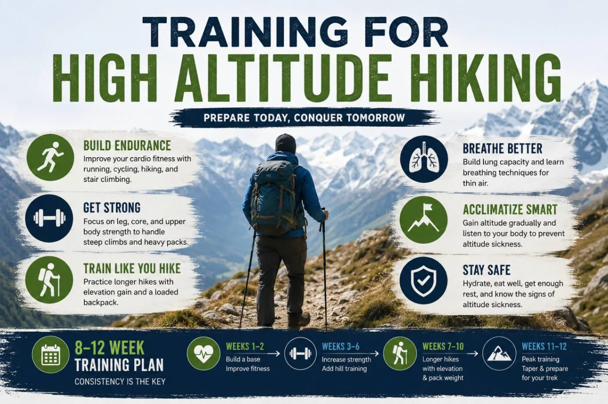

1. The High-Altitude Physiological Reality: What Happens to Your Body Above 3,000m

To train effectively for high-altitude trekking, you must first understand the physiological battlefield of the Himalayas. Many travelers mistakenly believe that the air at high altitude "contains less oxygen." In reality, the atmosphere contains 20.9% oxygen at sea level, in Kathmandu, and at the summit of Mount Everest.
What changes drastically is barometric pressure:
- Boyle's Law & Atmospheric Pressure: At sea level, atmospheric pressure is roughly 760 mmHg. At Namche Bazaar (3,440m), pressure drops to ~510 mmHg (~67% of sea-level density). At Everest Base Camp (5,364m) or Thorong La Pass (5,416m), pressure plummets to ~400 mmHg—giving you only 50% to 53% of effective sea-level oxygen per breath.
- The Cascading Physiological Response: When arterial oxygen saturation (SpO2) drops, your body triggers rapid compensatory mechanisms:
- Hyperventilation: Your breathing rate increases both at rest and during exertion to pull in more oxygen molecules.
- Tachycardia: Your resting heart rate increases by 20% to 35% to pump oxygen-depleted blood faster to vital organs.
- Fluid Shifts: Hyperventilation and bone-dry alpine air cause rapid respiratory water loss, thickening your blood and increasing dehydration risk.
While no gym exercise can chemically stimulate erythropoietin (EPO) production like real altitude, exceptional cardiovascular conditioning dramatically reduces the heart rate and respiratory strain required to hike uphill, preserving energy for the body's natural acclimatization process.
2. The 4 Pillars of High-Altitude Preparation: Cardio, Strength, RPE & Acclimatization
A comprehensive high-altitude training program is built on four interconnected pillars:
Pillar 1: Aerobic Base (Zone 2 Cardio)
Developing a massive mitochondrial base through sustained low-to-moderate intensity exercise. This trains your muscles to burn fatty acids rather than limited glycogen stores, allowing you to hike 6 to 8 hours daily without hitting "the wall."
Pillar 2: Muscular Endurance & Eccentric Strength
Conditioning the quadriceps, hamstrings, glutes, and calves to power up 1,000 vertical meters of stone staircases, and more importantly, absorb repetitive shock loads during steep 2,000-meter descents without blowing out your knees.
Pillar 3: Core & Load Carriage Stability
Strengthening the posterior chain, erector spinae, and core stabilizers to comfortably carry a 5kg to 8kg daypack across uneven moraines, suspension bridges, and steep boulder fields without shoulder or lower back spasms.
Pillar 4: Pacing Discipline & Mental Resilience
Mastering Rate of Perceived Exertion (RPE) and learning to maintain the Sherpa *"Bistari, Bistari"* (slow, rhythmic) walking pace. Mental toughness allows you to stay calm and positive through sub-zero bedroom nights and physical fatigue.
3. Zone 2 Aerobic Base Training: The Foundation of Mountain Endurance
The single biggest mistake sea-level athletes make when training for Nepal is doing too much high-intensity crossfit or sprinting. High-Intensity Interval Training (HIIT) operates in Zone 4 and Zone 5, burning anaerobic carbohydrates and producing high lactic acid.
Himalayan trekking, however, is a Zone 1 and Zone 2 endurance event lasting 6 to 8 hours per day for 12 to 18 consecutive days:
- What Is Zone 2? Zone 2 corresponds to 60% to 70% of your maximum heart rate. At this intensity, you can breathe comfortably through your nose and speak in full sentences without gasping for breath.
- The Mitochondrial Adaptation: Training in Zone 2 increases capillary density around working muscles and multiplies the size and number of mitochondria—the cellular power plants that generate ATP through oxygen-dependent fat oxidation.
- Recommended Weekly Volume: Aim for 3 to 4 sessions per week of 45 to 75 minutes in Zone 2. Optimal modalities include incline treadmill walking, outdoor trail hiking, indoor cycling, and rowing.
4. StairMaster & Incline Treadmill Protocols: Simulating Himalayan Staircases
Himalayan trails are famous for "Nepali flat"—a local euphemism for thousands of hand-carved stone steps climbing steeply up river canyons and mountain ridges. To prepare your legs for these endless staircases in a flat city or gym, use these three proven protocols:
| Protocol Name | Equipment & Settings | Duration & Reps | Focus & Coaching Cue |
|---|---|---|---|
| Protocol A: Incline Treadmill Ruck | Treadmill at 12% to 15% incline; speed 4.0 – 4.8 km/h. Wear 5kg backpack. | 45 – 60 minutes continuous | Do not hold the handrails! Keep chest proud, land midfoot, breathe rhythmically. |
| Protocol B: StairMaster Step Ladder | Gym revolving stair climber at Level 4 to Level 7. Add 4kg backpack by Week 6. | 30 – 45 minutes | Hands off the console! Stand upright; drive through the heels to engage glutes. |
| Protocol C: Weighted Box Step-Ups | 12-inch to 16-inch plyo box or bench with 6kg backpack or dumbbells. | 3 sets of 50 to 100 reps per leg | Step completely up to full hip extension; control the descent slowly. |
5. Eccentric Leg Strength: Protecting Your Knees for 2,000m+ Descents

Almost all trekkers worry about the climb up, but the descent is what causes the most agonizing pain and injuries:
On the descent from Gorak Shep to Lukla, or from Thorong La down to Muktinath, you drop between 1,600 and 2,400 vertical meters in a single day. Every downward step forces your quadriceps into an eccentric contraction (lengthening under load while decelerating your body weight plus backpack). This generates severe muscle micro-tears and immense shear stress on the patellar tendon.
Incorporate these four strength exercises twice weekly to bulletproof your knees:
- Eccentric Step-Downs: Stand on a 6-inch to 8-inch box. Slowly lower your non-working heel toward the floor over a 3-second count, keeping your knee tracking straight over your second toe. 3 sets of 12 reps per leg.
- Bulgarian Split Squats: Rear foot elevated on a bench, descend into a deep lunge. Builds single-leg balance and quadriceps/glute endurance. 3 sets of 10–12 reps.
- Romanian Deadlifts (RDLs): Hinge at the hips with dumbbells to strengthen the hamstrings, glutes, and lower back. 3 sets of 12 reps.
- Tibialis & Calf Raises: Standing calf raises and heel-walking to reinforce ankles, Achilles tendons, and shins against sprains on loose moraine gravel.
6. Core & Kinetic Chain Conditioning for Loaded Pack Carrying
Even with a dedicated mountain porter carrying your 12–15kg expedition duffel, you must carry your own daypack containing 2 liters of water, camera gear, thermal down layers, waterproof shell, snacks, and first aid supplies (weighing 5kg to 7kg).
Carrying that load across uneven terrain for 7 hours places relentless isometric demand on your core, thoracic spine, and hip stabilizers:
Suitcase & Farmer's Carries
Pick up a heavy dumbbell or kettlebell (16–24kg) in one hand and walk with an upright posture for 60 seconds without tilting. Strengthens the obliques, quadratus lumborum, and grip, preventing lower back fatigue on the trail.
Anti-Rotational Planks & Pallof Press
Standard front planks (3 x 60 sec), side planks, and resistance-band Pallof presses build deep core rigidity, ensuring your pelvis and spine stay aligned when stepping across slippery river stones or boulder moraines.
7. The Truth About Altitude Training Masks & Hypoxic Tents: Do They Work?
A common question from aspiring trekkers is: "Should I buy one of those altitude training masks that look like a gas mask to prepare for Nepal?"
The honest scientific verdict: Altitude training masks DO NOT simulate altitude.
- How Masks Actually Work: Elevation training masks use adjustable air valves to restrict airflow. They are Inspiratory Muscle Training (IMT) devices. They make it harder to inhale, strengthening your diaphragm and intercostal muscles. However, the air inside the mask has the exact same barometric pressure and oxygen content as sea-level air. They do not trigger red blood cell production, increase EPO, or acclimatize your body to hypoxia.
- What About Hypoxic Tents? Normobaric hypoxia tents (which pump nitrogen into an enclosed sleeping tent to reduce the percentage of oxygen) can stimulate mild erythropoiesis if used for 12+ hours per day for 4 to 6 weeks. However, they cost thousands of dollars, cause poor sleep quality, and are unnecessary for standard teahouse treks where proper trail acclimatization is built into the itinerary.
Do not waste money on gimmicky elevation masks. Spend that time walking on high-incline treadmills, doing weighted box step-ups, and hiking outdoors with your actual backpack and boots!
8. Respiratory Muscle Training (RMT) & Pursed-Lip Breathing Techniques
While you cannot pre-acclimatize at sea level, you can train your breathing mechanics to maximize oxygen absorption under heavy exertion:
- Pursed-Lip Breathing: Inhale slowly through your nose for 2 counts, then exhale slowly through pursed lips (as if whistling) for 4 counts. Pursed-lip breathing creates positive end-expiratory pressure (PEEP) in the airways, keeping alveoli open longer and improving oxygen exchange while expelling trapped carbon dioxide.
- Cadence Breathing (Syncing Breath with Steps): When ascending steep switchbacks above 4,000 meters, sync your breathing directly to your footsteps: one step per inhale, one step per exhale. This rhythmic pacing prevents hyperventilation and heart rate spikes.
- The Sherpa "Rest Step": On steep inclines, briefly lock your rear knee straight and pause for a fraction of a second on each stride. This momentary bone-lock transfers your body weight from fatigued quadriceps onto the skeletal structure, giving your muscles mini-rests on every single step.
9. Physical Readiness Benchmarks: The Pre-Trek Fitness Self-Test
Six to eight weeks before your departure flight to Kathmandu, test your physical readiness against these three practical benchmarks:
Benchmark 1: Incline Treadmill Test
Walk continuously for 60 minutes at 12% incline at 4.5 km/h carrying a 6kg backpack without holding handrails or stopping.
Benchmark 2: StairMaster Ladder
Climb continuously on a revolving StairMaster at Level 5–6 for 45 minutes with a 5kg pack without resting on the console.
Benchmark 3: Outdoor Hill Hike
Hike 15 to 18 km (9–11 miles) with 700m+ elevation gain in a local park or trail carrying an 8kg backpack in under 5 hours.
Readiness Assessment
If you can pass all three benchmarks with moderate effort, your cardiovascular and musculoskeletal systems are in the top 10% of prepared hikers for Nepal!
10. The Complete 16-Week Periodized Training Plan: Week-by-Week Breakdown
Follow this 5-phase progressive conditioning plan designed specifically for high-altitude trekking:
| Training Phase | Weeks | Weekly Structure | Primary Objectives |
|---|---|---|---|
| Phase 1: Aerobic Foundation | Weeks 1 – 4 | 3x Zone 2 cardio (45 min) 2x Bodyweight strength 1x Weekend walk (8–10km) |
Establish aerobic baseline; build exercise habit; introduce bodyweight squats, lunges, and planks. |
| Phase 2: Strength & Incline Loading | Weeks 5 – 8 | 2x Zone 2 cardio (50 min) 1x Incline treadmill/StairMaster (45 min) 2x Weighted leg strength 1x Hilly hike (10–12km, 4kg pack) |
Build single-leg eccentric strength; introduce weighted step-downs and Bulgarian split squats; load daypack. |
| Phase 3: Specificity & Volume | Weeks 9 – 12 | 2x Incline treadmill / StairMaster (55 min, 5kg) 2x Compound strength (squats, RDLs) 1x Long outdoor trail hike (14–16km, 6kg pack) |
Peak muscular endurance; break in official trekking boots; practice cadence and pursed-lip breathing. |
| Phase 4: Peak Simulation | Weeks 13 – 15 | 2x StairMaster intervals (60 min, 6kg) 1x Mobility / yoga session Back-to-back weekend hikes (Sat: 15km, Sun: 12km, 7kg pack) |
Simulate consecutive multi-day trail fatigue; test nutrition, hydration packs, and clothing layers. |
| Phase 5: Taper & Recovery | Week 16 | 2x Light Zone 1 walks (30 min, no pack) Daily stretching & foam rolling High hydration & 8+ hrs sleep |
Allow muscles and connective tissue to fully repair; store glycogen; fly to Nepal refreshed and energized. |
11. Nutrition, Hydration & Electrolyte Strategy for Mountain Conditioning
High-altitude physiology fundamentally alters your body's metabolic fuel demands:
- The Carbohydrate Shift: In thin air, the body burns carbohydrates at a significantly higher rate than fat because carbohydrate metabolism requires approximately 10% less oxygen to produce one unit of ATP than fat oxidation. During your long training hikes and on the trek, fuel with easily digestible carbs (oatmeal, bananas, energy bars, dried fruits, and dal bhat).
- Combatting Hypoxic Dehydration: The combination of dry mountain air, hyperventilation, and physical exertion leads to rapid fluid loss through exhaled moisture. At high altitude, you must drink 4 to 5 liters of fluid per day (water, garlic soup, ginger lemon tea).
- Electrolyte Replacement: Drinking large volumes of plain water flushes out sodium and potassium, causing hyponatremia and severe muscle cramps. Train with electrolyte replacement tablets (such as Nuun, Skratch, or ORS rehydration salts) on all long training sessions.
12. Altitude Sickness Prevention & Medical Knowledge (AMS, HAPE, HACE)

Fitness does not guarantee immunity from Acute Mountain Sickness. In fact, young and ultra-fit athletes are frequently the most vulnerable because their strong muscles tempt them to hike too fast, outpacing their blood's ability to acclimatize.
Memorize the three manifestations of altitude illness and the golden rules of mountain medicine:
1. Acute Mountain Sickness (AMS)
- Symptoms: Throbbing frontal headache, loss of appetite, nausea, mild dizziness, fatigue, and disturbed sleep.
- Action: Stop ascending. Rest at current elevation. Hydrate, take ibuprofen or Diamox. If symptoms resolve over 24 hours, you may proceed slowly.
2. HAPE & HACE (Life-Threatening Emergencies)
- HAPE (Lungs): Extreme breathlessness at rest, persistent cough producing pink or white frothy sputum, cyanosis (blue lips), rattling chest sound.
- HACE (Brain): Ataxia (inability to walk a straight line), slurred speech, confusion, hallucinations, severe lethargy.
- Action: IMMEDIATE DESCENT of at least 500m to 1,000m. Administer oxygen and call emergency helicopter rescue!
Diamox is a carbonic anhydrase inhibitor that forces the kidneys to excrete bicarbonate, acidifying the blood and stimulating your brain to breathe faster during sleep. Standard prophylactic dosage is 125mg twice daily, starting 24 hours before ascending above 3,000m. Discuss with your doctor prior to departure.
13. Trail Acclimatization Strategy: 'Climb High, Sleep Low' & Pacing Rules

Once you arrive on the trail in Nepal, theoretical training hands over to operational acclimatization protocols:
- The 300m – 500m Sleeping Rule: Above 3,000 meters (e.g., above Namche Bazaar or Lama Hotel), limit your net increase in sleeping altitude to 300 to 500 meters per 24 hours. Schedule a mandatory rest and acclimatization day every 3 to 4 days (e.g., at Namche 3,440m and Dingboche 4,410m on EBC; or Manang 3,540m on the Annapurna Circuit).
- "Climb High, Sleep Low" (Aichele Rule): On designated rest days, hike 300m to 500m higher in the afternoon (e.g., climbing from Namche up to the Everest View Hotel at 3,880m), linger for 45 minutes to expose your body to thinner air, then descend to your lower teahouse to sleep.
- The Sherpa Pacing Rule: Never hike at a speed that forces you to breathe through your mouth or gasp for air. Take short, rhythmic, measured steps. A pace that feels "embarrassingly slow" on Day 2 is the exact pace that gets you over a 5,400-meter pass on Day 10!
14. Gear Testing During Training: Boots, Socks, Poles & Daypack

Your 16-week training period is not just for your heart and muscles—it is your laboratory for testing technical gear:
- Break In Your Boots for at Least 50 Kilometers: Never buy new boots in Kathmandu or wear brand-new footwear on Day 1. Complete at least 5 to 6 long outdoor hikes in your official boots to mold the footbed and prevent devastating blisters.
- Master Dual Trekking Poles: Using trekking poles correctly absorbs up to 25% of the downward impact on your knees and engages the lats, deltoids, and core during uphill climbs. Train with poles during outdoor weekend hikes to build natural rhythm.
- Dial In Daypack Load Distribution: Adjust your daypack so that 80% of the weight rests firmly on your iliac crest (hip bones) via the padded waist belt, with only 20% resting on your shoulders.
15. Mental Toughness & Psychological Resilience on Multi-Day Treks

On Day 9 of a high-altitude expedition, when you wake up in an unheated room at -10°C, your water bottle is frozen solid, your legs are fatigued, and you have another 600 vertical meters to climb, mental resilience determines your success:
- Micro-Goal Setting: When facing a steep 4-hour climb up an alpine moraine, do not look at the distant mountain pass. Break the climb into micro-milestones: "I will walk smoothly to that big granite boulder," or "I will hike to the next prayer flag ridge before taking a sip of warm tea."
- Embracing Teahouse Realities: Anticipate rustic conditions in advance: unheated bedrooms, shared squat toilets, charging fees, and basic solar showers. Embracing the simplicity of mountain life and connecting with fellow trekkers around the dining hall yak-dung stove turns hardships into cherished memories.
Frequently Asked Questions (FAQ) About High Altitude Training
Select a category below to explore expert answers to the most common questions travelers ask about Train for High Altitude Hiking:
Difficulty & Fitness

Ready to Experience the Himalayas?
Whether you are preparing for high-altitude trekking, cultural circuits, or alpine summit expeditions, start planning a bespoke journey tailored to your fitness, travel season, and style.